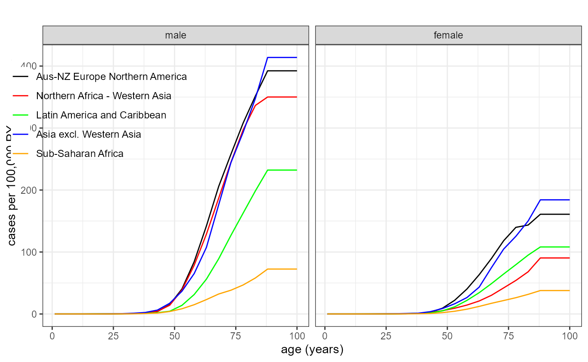

Using/Specifying Reference Data
CanEpiRisk_ReferenceData.Rmd1. Overview
This vignette explains how to use the built‑in reference
datasets (baseline cancer mortality and
incidence rates) and how to provide your
own reference data in the format expected by
CanEpiRisk.
(1) Predefined reference data
Regions
Both Mortality and Incidence are
lists of length 5 corresponding to WHO-like global
regions:
-
"Aus-NZ Europe Northern America"
-
"Northern Africa - Western Asia"
-
"Latin America and Caribbean"
-
"Asia excl. Western Asia"
"Sub-Saharan Africa"
Show region names:
names(Mortality)
#> [1] "Aus-NZ Europe Northern America" "Northern Africa - Western Asia"
#> [3] "Latin America and Caribbean" "Asia excl. Western Asia"
#> [5] "Sub-Saharan Africa"
names(Incidence)
#> [1] "Aus-NZ Europe Northern America" "Northern Africa - Western Asia"
#> [3] "Latin America and Caribbean" "Asia excl. Western Asia"
#> [5] "Sub-Saharan Africa"Sites and object structure
Each regional element is itself a list of
site-specific data.frames. The names of the sites
available for Mortality data are:
names(Mortality[[1]])
#> [1] "esophagus" "stomach" "colon" "liver"
#> [5] "pancreas" "lung" "breast" "prostate"
#> [9] "bladder" "brainCNS" "thyroid" "all_leukaemia"
#> [13] "all_cancer" "allsolid-NMSC" "allsolid" "leukaemia"
#> [17] "allcause" "survival"The canonical columns of each site-specific data.frame are:
-
age(integer, 1–100)
-
male(numeric)
-
female(numeric)
Rates are provided on a one‑year age grid (ages
1–100), which are linearly interpolated from
corresponding 5‑year rates in the original source (for the highest age
category (e.g., 85 or older), the rates are fixed). Some tables (e.g.,
allcause) may also include person‑years
columns (male_py and female_py), which may be
used for population-based averaging of calculated risks.
Example (Region 1, all solid cancer mortality):
head(Mortality[[1]]$allsolid)
#> age male female
#> 1 1 3.993729e-06 3.302123e-06
#> 2 2 1.198119e-05 9.906370e-06
#> 3 3 1.996865e-05 1.651062e-05
#> 4 4 1.946148e-05 1.625391e-05
#> 5 5 1.895432e-05 1.599719e-05
#> 6 6 1.844715e-05 1.574048e-05
tail(Mortality[[1]]$allsolid)
#> age male female
#> 95 95 0.02189662 0.01180741
#> 96 96 0.02189662 0.01180741
#> 97 97 0.02189662 0.01180741
#> 98 98 0.02189662 0.01180741
#> 99 99 0.02189662 0.01180741
#> 100 100 0.02189662 0.01180741Example (Region 3, leukaemia mortality):
head(Mortality[[3]]$leukaemia)
#> age male female
#> 1 1 4.066002e-06 3.390723e-06
#> 2 2 1.219801e-05 1.017217e-05
#> 3 3 2.033001e-05 1.695362e-05
#> 4 4 2.103463e-05 1.704913e-05
#> 5 5 2.173925e-05 1.714464e-05
#> 6 6 2.244387e-05 1.724015e-05
tail(Mortality[[3]]$leukaemia)
#> age male female
#> 95 95 0.0004455293 0.0002765286
#> 96 96 0.0004455293 0.0002765286
#> 97 97 0.0004455293 0.0002765286
#> 98 98 0.0004455293 0.0002765286
#> 99 99 0.0004455293 0.0002765286
#> 100 100 0.0004455293 0.0002765286Example (Region 5, all-cause mortality with person-years):
head(Mortality[[5]]$allcause)
#> age male female male_py female_py
#> 1 1 0.056160846 0.048467260 18761.24 18253.13
#> 2 2 0.009220674 0.007515785 18127.85 17684.38
#> 3 3 0.007183781 0.006129537 17634.31 17232.95
#> 4 4 0.005848985 0.005303171 17194.27 16823.33
#> 5 5 0.004864717 0.004698722 16794.60 16448.30
#> 6 6 0.004105606 0.004193329 16422.67 16095.09
tail(Mortality[[5]]$allcause)
#> age male female male_py female_py
#> 95 95 0.3576011 0.2754637 9.8210 23.4550
#> 96 96 0.3680964 0.2902003 6.9710 16.8780
#> 97 97 0.3780983 0.3040167 4.9220 11.9500
#> 98 98 0.3884477 0.3176900 3.4625 8.3635
#> 99 99 0.3989252 0.3305587 2.4190 5.8265
#> 100 100 0.4149599 0.3458980 1.6845 4.0590Visualizing baselines
Use plot_refdata() to compare site‑specific baselines
across regions:
# Lung cancer mortality across regions (legend top-left-ish)
plot_refdata(dat = Mortality, outcome = "lung", leg_pos = c(0.27, 0.95))
Using reference data in risk calculations
A typical calculation needs a site-specific baseline and all‑cause mortality for the same region:
# Example: CER for all solid cancer mortality (Region 1), female,
# 0.1 Gy at age 15, follow to age 100, ERR model
exp <- list(agex = 15, doseGy = 0.1, sex = 2)
ref <- list(
baseline = Mortality[[1]]$allsolid, # site baseline
mortality = Mortality[[1]]$allcause # all-cause mortality
)
mod <- LSS_mortality$allsolid$L # example risk model (linear ERR)
opt <- list(maxage = 100, err_wgt = 1, n_mcsamp = 5000)
cer <- CER(exposure = exp, reference = ref, riskmodel = mod, option = opt)
cer * 10000
#> mle mean median ci_lo.2.5% ci_up.97.5%
#> 156.0667 157.7446 156.0157 115.7108 211.9025Notes: - sex is typically coded 1 = male,
2 = female. - err_wgt = 1 yields pure
ERR; 0 would be pure EAR
(when available).
(2) Providing your own reference data
You may replace the built‑in region lists with your own. CanEpiRisk
expects a list-of-regions, where each region is a
named list of sites, and each site is a
data.frame with at least age,
male, female columns on ages
1:100.
Minimal template
# Build a custom region with two sites as an example
my_region <- list(
allsolid = data.frame(
age = 1:100,
male = rep(0, 100), # replace with your rates
female = rep(0, 100)
),
allcause = data.frame(
age = 1:100,
male = rep(0, 100),
female = rep(0, 100),
male_py = rep(NA_real_, 100), # optional
female_py = rep(NA_real_, 100) # optional
)
)Age distribution
CanEpiRisk has an list object agedist_rgn
which contains information about the age distribution for each of the
WHO global regions. agedist_rgn is used to compute the
population-averaged risks using functions population_CER
and population_YLL. The age distribution for a WHO global
region can be plotted by using function plot_agedist() as
below.
# Example: age distributions for Regions 1 and 5
plot_agedist( regions=c(1,3,5) )
#> Scale for x is already present.
#> Adding another scale for x, which will replace the existing scale.
3. Notes
- Units: Rates should be per person-year on the age grid. If your sources are in 5‑year groups, aggregate or interpolate to ages 1–100 to match the package convention.
4. See also
- Package overview vignette and risk‑model vignette for how baselines
are consumed in
CER()and related functions.